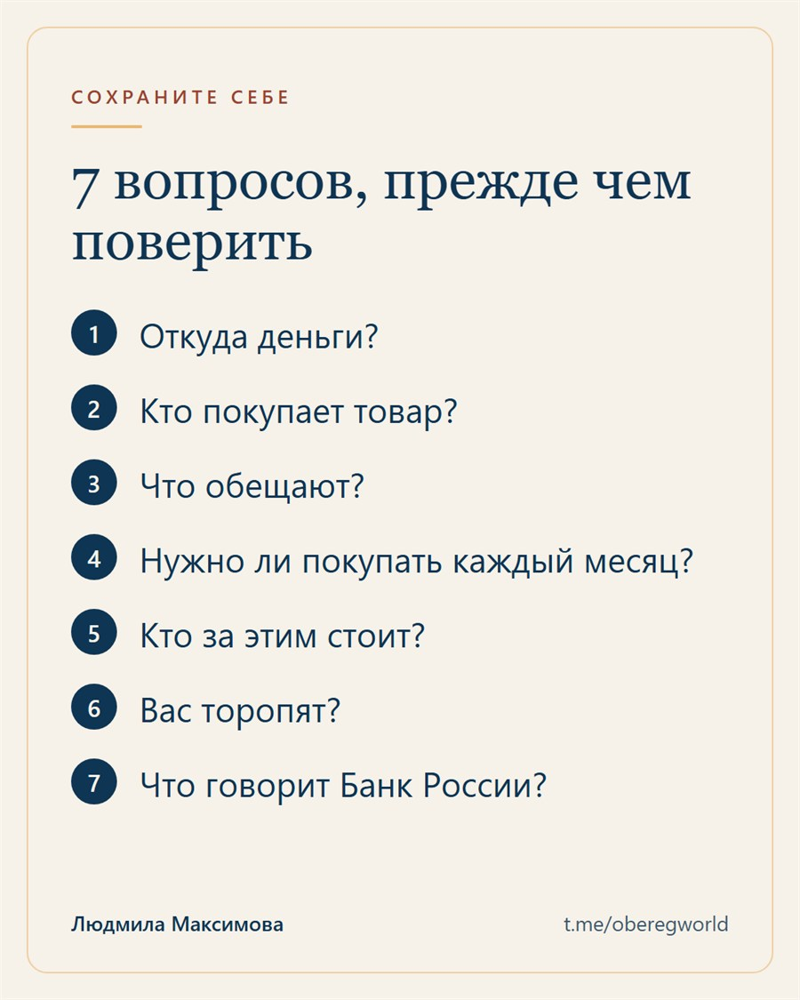

Честно о главном
Сетевой бизнес или пирамида: как проверить, прежде чем верить
«Это же пирамида?» Этот вопрос предприниматель задаёт первым, когда слышит слова «сетевой бизнес». Я задавала его сама, и не один раз. Рассказываю, как проверяю: без лозунгов и без «поверьте мне на слово».

Коротко
Главное отличие одно: откуда берутся деньги. В пирамиде участникам платят из денег новых участников, а товар, если он вообще есть, нужен для вида. В сетевом бизнесе вознаграждение должно складываться из продаж реального товара людям, которые им пользуются. Остальные признаки нужны, чтобы это разглядеть.
Что считает пирамидой Банк России
Банк России описывает финансовую пирамиду как схему, в которой «прибыль» старым участникам платят из денег новых. Узнать её, по словам регулятора, можно так:
- обещают очень высокую доходность;
- для участия часто нужен первоначальный взнос;
- проект агрессивно рекламирует себя на модных темах: криптовалюта, кешбэк и всё, что сейчас на слуху;
- многие такие проекты живут только в мессенджере, без своего сайта;
- нет конкретных сведений о руководителе проекта и о финансовом положении организации.
За организацию пирамид в России есть ответственность: статья 14.62 КоАП, статьи 172.2 и 159 Уголовного кодекса.
Второй пункт стоит разобрать отдельно. Первоначальный взнос сам по себе повод присмотреться, но ещё не приговор. В сетевом бизнесе вход тоже часто начинается с покупки. В моём деле так и есть: чтобы стать партнёром, нужно купить приборы компании. Поэтому вопрос «а не пирамида ли это?» я считаю законным и совсем не обидным. Ответ на него прячется в том, что происходит после входа.
Как на это смотрит американский регулятор
Федеральная торговая комиссия США много лет разбирает дела сетевых компаний и выпустила для бизнеса подробное руководство. Если пересказать его по-человечески, получится три мысли.
- Решает, за что платят. Если вознаграждение платят за приглашение новых людей и оно не связано с продажами товара конечным покупателям, это пирамида.
- Хороший товар сам по себе не спасает. Компания может продавать настоящую и даже качественную продукцию и всё равно оказаться пирамидой.
- Настораживают покупки ради бонуса. Если люди берут товар, чтобы выполнить план и получить вознаграждение, хотя сам товар им не нужен, это тревожный знак.
Мне эта логика близка. Двадцать лет в недвижимости научили меня первым делом смотреть на документы и на то, как устроены деньги. Рекламный буклет подождёт.
7 вопросов, которые я задаю, прежде чем поверить
Сохраните этот список. Он пригодится, даже если вы никогда не придёте в сетевой бизнес: по тем же вопросам проверяется любое «уникальное предложение».
- Откуда деньги? Из чего складывается вознаграждение партнёров: из продаж товара или из взносов новых людей? Попросите показать это в документах.
- Кто покупает товар? Есть ли у продукции покупатели, которые просто ею пользуются и не собираются строить бизнес? Если товар нужен только самим участникам, задумайтесь.
- Что обещают? Если вам называют доход, особенно высокий и «гарантированный», это повод насторожиться. Честный ответ на вопрос о доходе звучит так: гарантий нет.
- Нужно ли покупать каждый месяц? Узнайте, есть ли обязательные покупки, чтобы оставаться в деле или получать вознаграждение. Если есть, посчитайте, во что они обойдутся за год.
- Кто за этим стоит? Название компании, руководители, сайт, документы. Анонимность Банк России прямо называет признаком пирамиды.
- Вас торопят? «Места заканчиваются», «условия только до пятницы». Хорошее предложение переживёт неделю ваших раздумий.
- Что говорит Банк России? Найдите компанию в списке компаний с выявленными признаками нелегальной деятельности. Если вам предлагают финансовые услуги, проверьте лицензию в справочнике финансовых организаций.

Я за то, чтобы проверять, а не верить. Даже когда верить очень хочется.
Что я могу сказать про своё дело
Я сама недавно в партнёрском бизнесе, поэтому не стану пересказывать чужие истории успеха и тем более обещать ваши. Скажу то, что могу сказать прямо:
- вход через покупку приборов компании, сумму я называю до любого решения;
- приборы, купленные на входе, остаются у вас: ими пользуются сами, дома, и рассказывают о своём опыте. Так это дело и устроено;
- обязательных ежемесячных покупок нет: ни чтобы оставаться партнёром, ни чтобы получать вознаграждение;
- доход не гарантирован ни мне, ни вам;
- название компании, её сайт и документы о приборах и о том, из чего складывается вознаграждение партнёров, вы получите до любого решения. Проверьте их сами, в том числе по списку Банка России.
Почему же компании нет на сайте? Потому что сначала вы знакомитесь со мной. Компанию можно проверить по документам, а человека, с которым предстоит работать, только поговорив.
Выводы вы делаете сами. Мне так спокойнее. Я знаю, что значит отвечать за всё, и не хочу, чтобы кто-то пришёл ко мне за обещанием, которого я не давала.
Если вы как раз выбираете, чем заняться рядом со своим делом, прочитайте ещё мою статью о том, как выбрать второе направление и не бросить основное.
Остались вопросы? Задайте их мне
Любые, даже неудобные. Особенно неудобные. Напишите мне в Telegram или WhatsApp. Я отвечу сама, без ботов и менеджеров, и, если захотите, приглашу на онлайн-встречу на 30–40 минут, где покажу документы. А если пока хочется просто присмотреться, загляните в мой Telegram-канал: там я показываю, как живу у моря и строю второе дело.
Источники
- Банк России. Виды нелегальной деятельности на финансовом рынке. Страница обновлена 30.09.2025, прочитана 24.11.2026.
- Банк России. Список компаний с выявленными признаками нелегальной деятельности на финансовом рынке.
- Банк России. Справочник финансовых организаций.
- Federal Trade Commission. Business Guidance Concerning Multi-Level Marketing. Прочитано 24.11.2026.